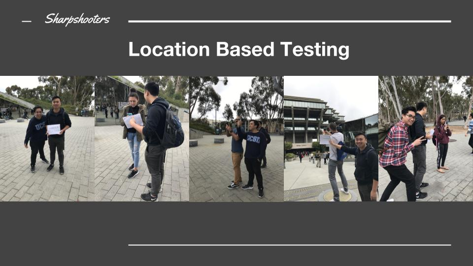
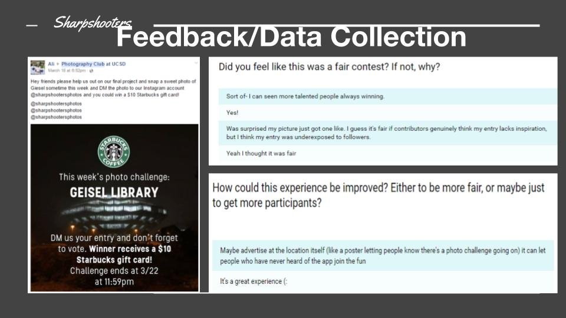
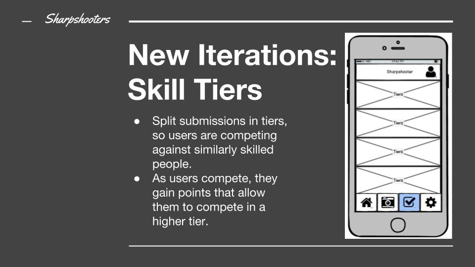
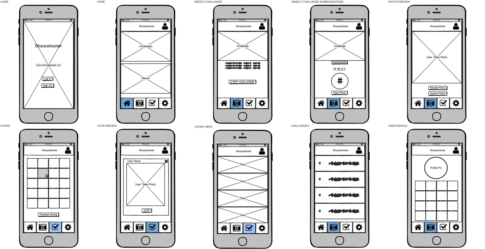

CHALLENGE
Photographers and photo enthusiasts often have trouble gaining exposure and traction in the community to advance their careers.
IDEA
Sharpshooters is a location based application that allows you to compete with others by taking photos of locations near you and vote on your favorite ones.
SOLUTION
Networking
Location-based photo challenges provides the opportunity for users to physically run into each other and network
Exposure
Winners of challenges get featured on the platform, showcasing their talent to the entire community
COMPETITIVE ANALYSIS
Reddit
Voting system, niche communities, moderation.
Instagram
Facilitates location based activity, not incentivized, and lacks single vote limit and no moderation for spamming.
Twenty20
Incentivized and motivated by monetary reward, no spam, but it's not location based.
OVERVIEW
The first things that we did after generating the concept was to create the pitch. In the pitch we addressed how our target demographic was the photo enthusiast community, that we would use piggyback prototyping to test the project, and that we would generate feedback forms to measure the success of our project. The class responses to this pitch helped us gauge if our team was heading in the right direction. We received mostly positive comments about the prototyping strategy, and some worries about whether or not the competitive aspect would be successful.
PIGGYBACK PROTOTYPING & USER TESTING
For the timeframe allotted for this project, we did not do much user research, however through the use of piggyback prototyping we can use it determine its viability.
Utilizing piggyback prototyping, our group completed a number of things such as: the creation of our Instagram page in which we would be prototyping in, and a simple test for our experience. We used the ability to make posts to announce our contests. Users would DM us their images, and we post them on our feed for people to vote. Winners are chosen based on amount of votes and visual appeal, to tackle the issue of spam. The winner would be announced on our feed with its own dedicated post for users to see, where the winner gets that exposure from being announced.
Users in our class for our first round of testing, were asked to take a photo of the muir basketball courts, cast their votes, and fill out the feedback form at the end of the experience. The in class prototyping provided our team with significant feedback about the shortfalls of our project. First, we realized that piggyback prototyping removed our ability to facilitate fair voting. Instagram allows users to like any number of different photos, and for them to even like their own. In terms of the actual experience, we realized a problem with our user group. Unlike the target user group, which would consist of photo enthusiasts, this group was much more general in terms of interest. The feedback forms correlated with our findings, as users stated they lacked the motivation to repeat the experience.
USER TESTING PART 2
After performing the in-class prototyping, and discussing our findings with the professor, we realized we needed to do two big things: increase the motivation for users to actually use the app, and to further incorporate the idea of being a location-based app. At the suggestion of Professor Dow, our team added the concept of a prize to our competition. That way, users would be even more motivated to compete, and they might even increase exposure to the app by sharing the experience with their friends. In addition to this, our team reached out to our school's Photography Club Facebook page, in the hopes of getting the right users to test our experience. As for the location component of our application, we decided to physically host the experience outside of Geisel Library.
Our physical bodies and interactions with students passing by represented the virtual experience of having your phone notify you of a challenge. In the half-hour that we tested this experiment, we managed to have social interactions with upwards of 10 people.


Unfortunately, only 5 of these individuals actually completed the experience. What we learned from this was that not all users had the Instagram app required to test the experiment, or some were just not interested in the interaction. What we learned from the five individuals who did complete the experience, was that the interaction was simple, and that reward played a huge role in determining their effort. Reflecting upon this feedback, we can observe that users who have the necessary motivations to compete, such as photo enthusiast owning the SharpShooter app, would do so, and would repeat the experience again if given the opportunity, simply because of the apps simplicity.
ITERATIONS
One of the components that we developed to target the idea of “gaming the voting system”, was our actual interface, and the idea of a tier system. The tier system was a concept we generated early in the design process, to distinguish the skilled photographers from the novices. We believe the tier system would not only add to the credibility of our contest, but would also allow professionals to connect.

PROTOTYPE RESULTS, REFLECTION, & FURTHER ITERATIONS
In terms of our final photo contest, we generated participation from 20 legitimate users, with the highest number of votes reaching 39. We wanted to observe if users would participate, and we believe that we iterated a prototype that would replicate these real world results. If we were able to convince companies to actually sponsor such competitions, and the notification process is simplified to that of the phone, then we believe users would participate in the same way, if not better, than performed in our prototype phase. In addition, our apps intention of social interaction amongst users within the same location was also a concept we would further flesh out in the real application. This would take place in the form of having a time-constricted contest, so as to encourage more users to interact in the same location at the same time.
Going further, we created some wireframes using Balsamiq to mockup an interface for a proposed Sharpshooters app, that should tackle the main features and fight against confounding variables we saw in our prototype. We believe having a home page for current contests and a spot for the featured winner should be the first thing a user sees, as the main point of the app is to encourage them to partake in the contests to earn their spot on the front page for praise and exposure.
A user can hit the challenge button to see the current contest and choose to participate. If they choose to, they will be given a timer of how much time left in the contest there is, as well as a description and a list of people who are at the location which may encourage people to socially interact while there. This feature should encompass the novel social experience, as it can encourage people to step out of their comfort zone and meet up in person. After placing their entry or going straight to the voting page, they will be allotted one vote for any of the entries listed in the grid, but cannot vote for their own.
To tackle the skill level issue, we would implement a skill tier interface, where based on a person's photographic skill, they will be placed and only be able to compete at the level they achieved through a point system by entering and voting in challenges. This should fairly separate the amateurs from the professionals so that the playing fields would be fair. Similarly to Instagram, we would also implement a profile of the user's entries which acts like a portfolio for users who would like to get in touch with them.
